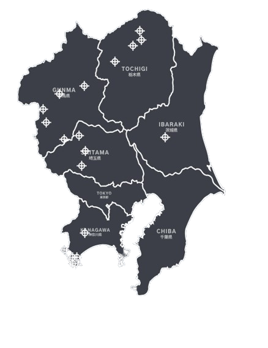

Monte Akina
秋名山

Características
Nombre:
Monte Akina
Nombre Original:
秋名山
Longitud:
8.0 km
Puntos Clave:
5 horquillas consecutivas, cunetas, rectas largas, terraplenes pronunciados, abundantes oportunidades de adelantamiento
Equipo Local:
Akina SpeedStars
Prefectura:
Descripción
Akina, enclavada en Gunma, es una pista venerada que atrae a pilotos de todo el mundo. Con sus características curvas cerradas, cambios de elevación y vistas impresionantes, personifica la esencia de las carreras de paso de montaña. Con 8 kilómetros de longitud, esta icónica pista combina caucho y asfalto, enmarcada por imponentes montañas. Su legado y sus batallas han convertido a Akina en un circuito sagrado. Ya sea buscando la adrenalina de dominar sus curvas o simplemente disfrutando de su encanto, Akina ofrece una experiencia de touge inolvidable donde las leyendas prosperan y la velocidad habla por sí sola.
